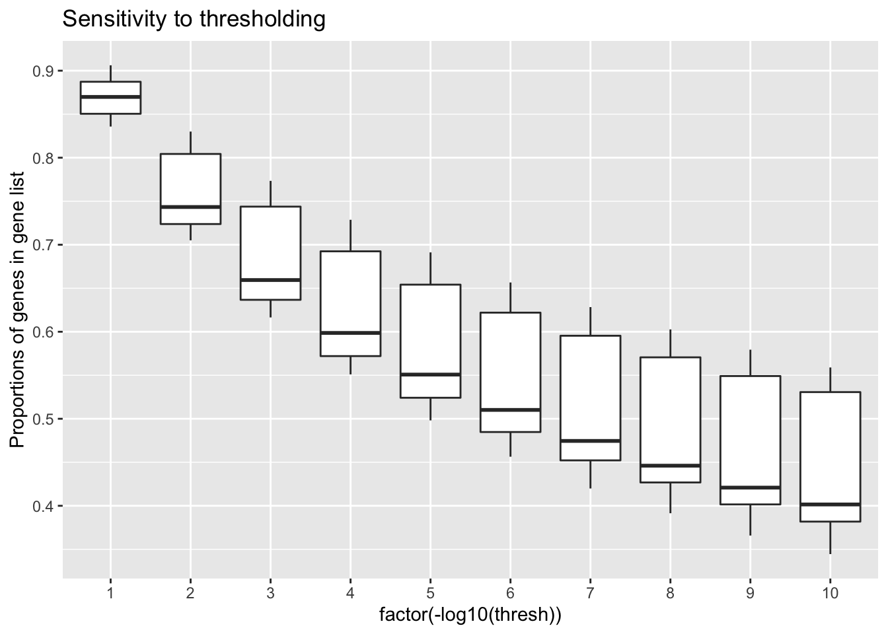
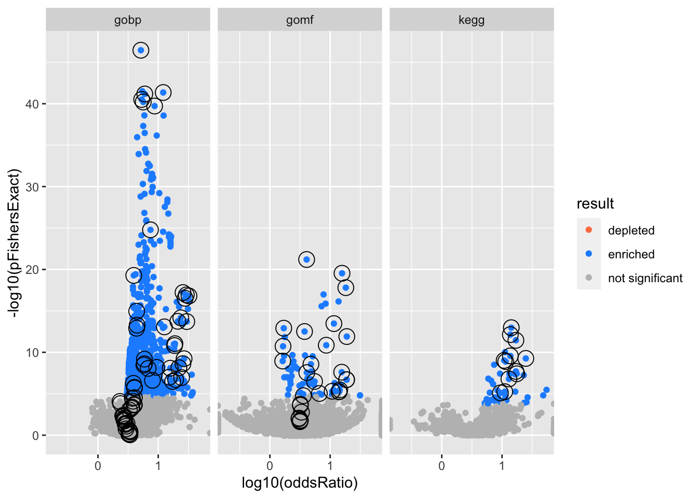
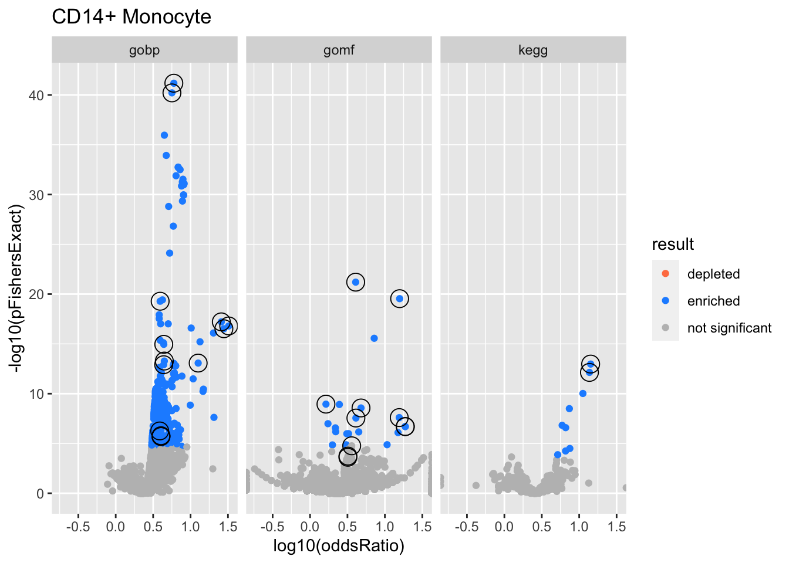
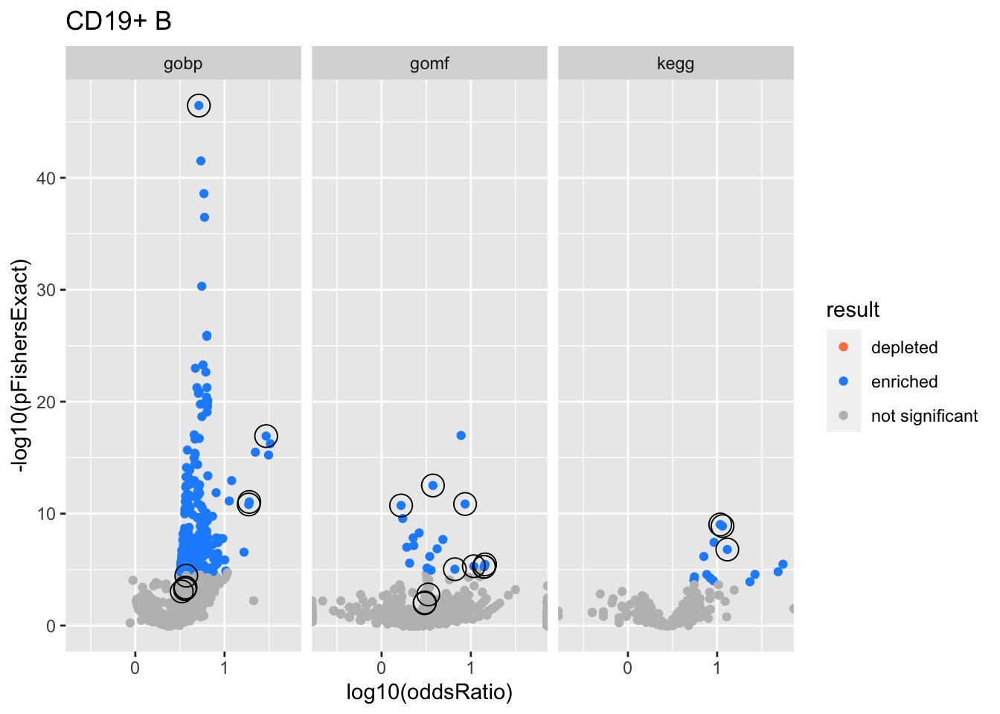
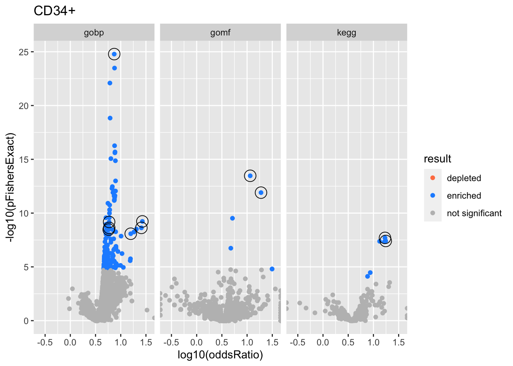
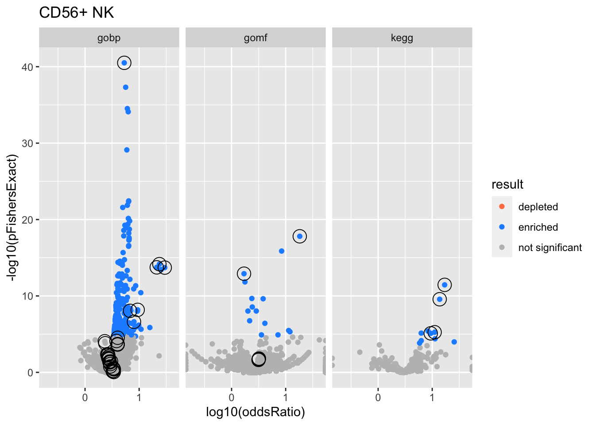
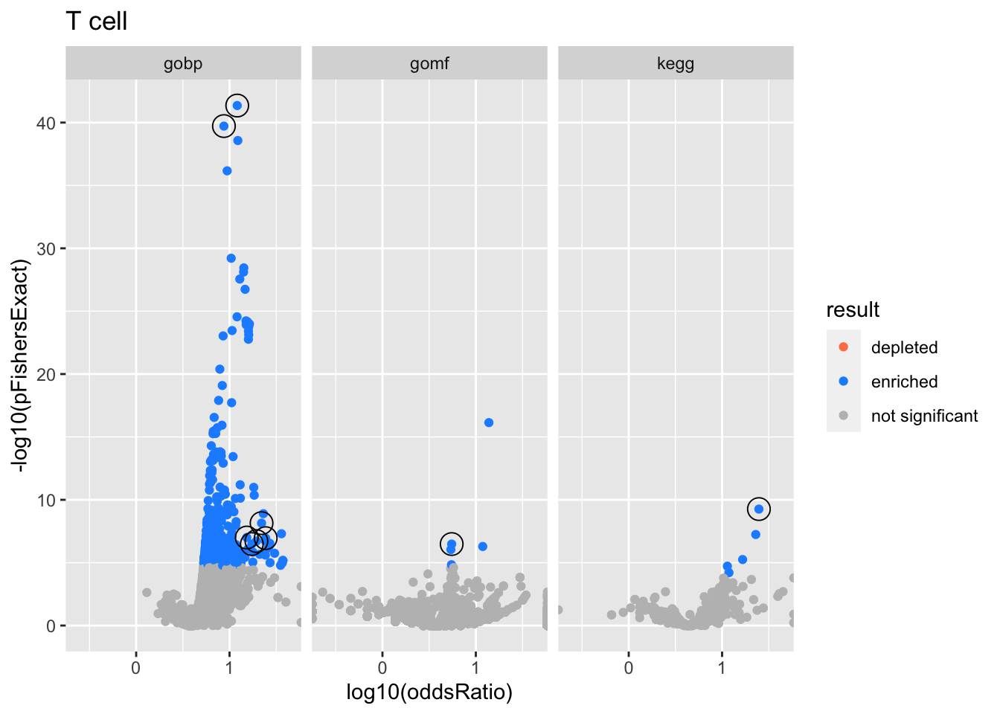

Last updated: 2022-04-12
Checks: 7 0
Knit directory: logistic-susie-gsea/
This reproducible R Markdown analysis was created with workflowr (version 1.7.0). The Checks tab describes the reproducibility checks that were applied when the results were created. The Past versions tab lists the development history.
Great! Since the R Markdown file has been committed to the Git repository, you know the exact version of the code that produced these results.
Great job! The global environment was empty. Objects defined in the global environment can affect the analysis in your R Markdown file in unknown ways. For reproduciblity it’s best to always run the code in an empty environment.
The command set.seed(20220105) was run prior to running the code in the R Markdown file. Setting a seed ensures that any results that rely on randomness, e.g. subsampling or permutations, are reproducible.
Great job! Recording the operating system, R version, and package versions is critical for reproducibility.
Nice! There were no cached chunks for this analysis, so you can be confident that you successfully produced the results during this run.
Great job! Using relative paths to the files within your workflowr project makes it easier to run your code on other machines.
Great! You are using Git for version control. Tracking code development and connecting the code version to the results is critical for reproducibility.
The results in this page were generated with repository version 5e3a4e3. See the Past versions tab to see a history of the changes made to the R Markdown and HTML files.
Note that you need to be careful to ensure that all relevant files for the analysis have been committed to Git prior to generating the results (you can use wflow_publish or wflow_git_commit). workflowr only checks the R Markdown file, but you know if there are other scripts or data files that it depends on. Below is the status of the Git repository when the results were generated:
Ignored files:
Ignored: .DS_Store
Ignored: .RData
Ignored: .Rhistory
Ignored: .Rproj.user/
Ignored: library/
Ignored: renv/library/
Ignored: renv/staging/
Ignored: staging/
Untracked files:
Untracked: .ipynb_checkpoints/
Untracked: Untitled.ipynb
Untracked: _targets.R
Untracked: _targets.html
Untracked: _targets.md
Untracked: _targets/
Untracked: _targets_r/
Untracked: analysis/fetal_reference_cellid_gsea.Rmd
Untracked: analysis/fixed_intercept.Rmd
Untracked: analysis/iDEA_examples.Rmd
Untracked: analysis/latent_gene_list.Rmd
Untracked: analysis/libra_setup.Rmd
Untracked: analysis/linear_method_failure_modes.Rmd
Untracked: analysis/linear_regression_failure_regime.Rmd
Untracked: analysis/logistic_susie_veb_boost_vs_vb.Rmd
Untracked: analysis/logistic_susie_vis.Rmd
Untracked: analysis/references.bib
Untracked: analysis/simulations.Rmd
Untracked: analysis/test.Rmd
Untracked: baboon_diet_cache/
Untracked: build_site.R
Untracked: cache/
Untracked: code/enrichment_pipeline.R
Untracked: code/html_tables.R
Untracked: code/latent_logistic_susie.R
Untracked: code/logistic_susie_data_driver.R
Untracked: code/marginal_sumstat_gsea_collapsed.R
Untracked: code/sumstat_gsea.py
Untracked: code/susie_gsea_queries.R
Untracked: data/adipose_2yr_topsnp.txt
Untracked: data/de-droplet/
Untracked: data/deng/
Untracked: data/fetal_reference_cellid_gene_sets.RData
Untracked: data/human_chimp_eb/
Untracked: data/pbmc-purified/
Untracked: data/wenhe_baboon_diet/
Untracked: deng_example_cache/
Untracked: docs.zip
Untracked: human_chimp_eb_de_example_cache/
Untracked: index.md
Untracked: latent_logistic_susie_cache/
Untracked: simulation_targets/
Untracked: single_cell_pbmc_cache/
Untracked: single_cell_pbmc_l1_cache/
Untracked: summary_stat_gsea_exploration_cache/
Untracked: summary_stat_gsea_sim_cache/
Unstaged changes:
Modified: _simulation_targets.R
Modified: _targets.Rmd
Modified: analysis/alpha_for_single_cell.Rmd
Modified: analysis/deng_example.Rmd
Modified: analysis/gseabenchmark_tcga.Rmd
Modified: analysis/single_cell_pbmc.Rmd
Modified: analysis/single_cell_pbmc_l1.Rmd
Deleted: analysis/summary_stat_gsea_univariate_simulations.Rmd
Modified: code/fit_baselines.R
Modified: code/fit_logistic_susie.R
Modified: code/fit_mr_ash.R
Modified: code/fit_susie.R
Modified: code/load_gene_sets.R
Modified: code/marginal_sumstat_gsea.R
Modified: code/simulate_gene_lists.R
Modified: target_components/factories.R
Modified: target_components/methods.R
Note that any generated files, e.g. HTML, png, CSS, etc., are not included in this status report because it is ok for generated content to have uncommitted changes.
These are the previous versions of the repository in which changes were made to the R Markdown (analysis/single_cell_pbmc_standardized.Rmd) and HTML (docs/single_cell_pbmc_standardized.html) files. If you’ve configured a remote Git repository (see ?wflow_git_remote), click on the hyperlinks in the table below to view the files as they were in that past version.
| File | Version | Author | Date | Message |
|---|---|---|---|---|
| Rmd | 5e3a4e3 | karltayeb | 2022-04-12 | wflow_publish(c(“analysis/index.Rmd”, “analysis/baboon_diet.Rmd”, |
library(tidyverse)
library(htmltools)
source('code/utils.R')
source('code/logistic_susie_vb.R')
source('code/logistic_susie_veb_boost.R')
source('code/load_gene_sets.R')
source('code/enrichment_pipeline.R')genesets <- load_gene_sets()
load('data/pbmc-purified/deseq2-pbmc-purified.RData')
names(deseq)#> [1] "CD19+ B" "CD56+ NK" "T cell" "CD14+ Monocyte"
#> [5] "CD34+"de <- map_dfr(names(deseq), ~ deseq[[.x]] %>%
as.data.frame %>%
rownames_to_column(var = 'gene') %>% mutate(celltype = .x))
hs <- org.Hs.eg.db::org.Hs.eg.db
gene_symbols <- unique(de$gene)
symbol2entrez <- AnnotationDbi::select(
hs, keys=gene_symbols,
columns=c('ENTREZID', 'ENSEMBL'),
keytype = 'ENSEMBL')
add_names = function(l, n){
names(l) <- n
return(l)
}
data <- de %>%
dplyr::rename('ENSEMBL' = gene) %>%
left_join(symbol2entrez, by='ENSEMBL') %>%
relocate(ENTREZID, .after=ENSEMBL) %>%
mutate( # set default columns
beta = log2FoldChange,
se = lfcSE,
threshold.on = padj
) %>%
group_by(celltype) %>%
group_map(~ .x, .keep = T) %>%
add_names(map_chr(., ~pluck(.x, 'celltype')[1]))# fit logistic susie
do_logistic_susie_cached = function(data,
db,
thresh,
prefix=''){
res <- xfun::cache_rds({
purrr::map_dfr(
names(data),
~do_logistic_susie(.x, db, thresh, genesets, data))
},
dir = params$cache_dir,
file=paste0(prefix, 'logistic_susie_', db, '_', thresh),
hash = list(data, db, thresh, prefix))
}
params.genesets <- eval(parse(text=params$genesets))
params.thresh <- eval(parse(text=params$thresh))
fits <- map_dfr(params.genesets, ~do_logistic_susie_cached(data, .x, params.thresh))
# fit ora
do_ora_cached = function(data, db, thresh, prefix='', ...){
res <- xfun::cache_rds({
purrr::map_dfr(names(data), ~do_ora(.x, db, thresh, genesets, data))
}, dir = params$cache_dir, file=paste0(prefix, 'ora_', db, '_', thresh), ...)
}
ora <- map_dfr(params.genesets, ~do_ora_cached(data, .x, params.thresh))mean.gene.prop = function(l){
purrr::map_dbl(3:10, ~get_y(l, 10^(-.x)) %>% mean())
}
thresh <- map_dbl(1:10, ~10**-.x)
.prop.ones = function(experiment){
map_dbl(thresh, ~ prep_binary_data(
genesets[['gobp']], data[[experiment]], thresh=.x)$y %>% mean())
}
prop.ones <- xfun::cache_rds({map_dfc(names(data), ~.prop.ones(.x))},
dir=params$cache_dir,
file='threshold_sensitivity')
colnames(prop.ones) <- names(data)
prop.ones <- prop.ones %>% mutate(thresh = thresh)
prop.ones %>%
pivot_longer(one_of(names(data))) %>%
group_by(name) %>%
mutate(value = value) %>%
ggplot(aes(x=factor(-log10(thresh)), y=value)) +
geom_boxplot() +
labs(
y = 'Proportions of genes in gene list',
title = 'Sensitivity to thresholding'
)
Colors represent enrichment/depletion detected by Fishers exact test (Benjamini Hochberg corrected p-values < \(0.05\)). Gene sets that belong to a SuSiE credible set are circled.
get_ora_enrichments = function(tbl){
tbl %>% mutate(
padj = p.adjust(pFishersExact),
result = case_when(
padj < 0.05 & oddsRatio < 1 ~ 'depleted',
padj < 0.05 & oddsRatio > 1 ~ 'enriched',
TRUE ~ 'not significant'
)
)
}
# plot all enrichments, highlight gene sets in credible set
csdat <- res2 %>%
filter(in_cs, active_cs)
res %>%
group_by(experiment, db) %>%
get_ora_enrichments %>%
ggplot(aes(x=log10(oddsRatio), y=-log10(pFishersExact), color=result)) +
geom_point() +
geom_point(
csdat,
mapping=aes(x=log10(oddsRatio), y=-log10(pFishersExact)),
color='black', pch=21, size=5) +
scale_color_manual(values = c('depleted' = 'coral',
'enriched' = 'dodgerblue',
'not significant' = 'grey')) +
facet_wrap(vars(db))
alpha is the posterior probability of SuSiE including this gene set in this component which is different from PIP (probability of SuSiE including this gene set in ANY component)beta posterior mean/standard error of posterior mean for effect size. Standard errors are likely too small.oddsRatio, pHypergeometric, pFishersExact construct a contingency table (gene list membersip) x (gene set membership), estimate the oddsRatio gives the odds of being in the gene list conditional on being in the gene set / odds of being in the gene list conditional on NOT being in the gene set. pHypergeometric and pFishersExact are pvalues from 1 and 2 sided test respectively.experiments <- unique(res$experiment)
do.experiment.volcano = function(this_experiment){
res %>%
filter(experiment == this_experiment) %>%
group_by(db) %>%
get_ora_enrichments %>%
ggplot(aes(x=log10(oddsRatio), y=-log10(pFishersExact), color=result)) +
geom_point() +
geom_point(
csdat %>% filter(experiment == this_experiment),
mapping=aes(x=log10(oddsRatio), y=-log10(pFishersExact)),
color='black', pch=21, size=5) +
scale_color_manual(values = c('depleted' = 'coral',
'enriched' = 'dodgerblue',
'not significant' = 'grey')) +
facet_wrap(vars(db)) +
labs(title = this_experiment)
}
for (i in 1:length(experiments)){
this_experiment <- experiments[i]
cat("\n")
cat("###", this_experiment, "\n") # Create second level headings with the names.
do.experiment.volcano(this_experiment) %>% print()
cat("\n\n")
for(db in names(html_tables[[this_experiment]])){
cat("####", db, "\n") # Create second level headings with the names.
to_print <- html_tables[[this_experiment]][[db]] %>% distinct()
to_print %>% report_susie_credible_sets() %>% htmltools::HTML() %>% print()
cat("\n")
}}
| geneSet | description | alpha | beta | beta.se | pHypergeometric | pFishersExact | overlap | geneSetSize | oddsRatio |
|---|---|---|---|---|---|---|---|---|---|
| L1 | |||||||||
| GO:0045321 | leukocyte activation | 0.876 | 0.785 | 0.0658 | 3.61e-42 | 6.64e-42 | 760 | 1020 | 5.98 |
| GO:0001775 | cell activation | 0.124 | 0.733 | 0.0622 | 3.97e-41 | 6.2e-41 | 828 | 1120 | 5.64 |
| L2 | |||||||||
| GO:0045047 | protein targeting to ER | 0.842 | 2.15 | 0.238 | 2.99e-18 | 6.12e-18 | 98 | 105 | 25.8 |
| GO:0006614 | SRP-dependent cotranslational protein targeting to membrane | 0.067 | 2.22 | 0.254 | 1.35e-17 | 1.57e-17 | 88 | 93 | 32.4 |
| GO:0006613 | cotranslational protein targeting to membrane | 0.0569 | 2.16 | 0.247 | 1.93e-17 | 3e-17 | 91 | 97 | 27.9 |
| GO:0072599 | establishment of protein localization to endoplasmic reticulum | 0.0337 | 2.02 | 0.233 | 5.91e-17 | 8.07e-17 | 99 | 108 | 20.3 |
| L3 | |||||||||
| GO:0006119 | oxidative phosphorylation | 0.999 | 1.8 | 0.208 | 4.54e-14 | 8.46e-14 | 103 | 118 | 12.6 |
| L4 | |||||||||
| GO:0006518 | peptide metabolic process | 0.772 | 0.477 | 0.0776 | 5.5e-16 | 1.11e-15 | 490 | 705 | 4.39 |
| GO:0006412 | translation | 0.131 | 0.501 | 0.0859 | 3.42e-14 | 5.29e-14 | 403 | 575 | 4.46 |
| GO:0043043 | peptide biosynthetic process | 0.0857 | 0.487 | 0.0845 | 7.72e-14 | 1.23e-13 | 413 | 593 | 4.37 |
| GO:0070125 | mitochondrial translational elongation | 0.00383 | 0.996 | 0.198 | 1.95e-06 | 3.57e-06 | 69 | 87 | 7.02 |
| L6 | |||||||||
| GO:0008380 | RNA splicing | 0.4 | 0.581 | 0.103 | 3.28e-07 | 5.52e-07 | 261 | 387 | 3.87 |
| GO:0000375 | RNA splicing, via transesterification reactions | 0.206 | 0.635 | 0.115 | 9.79e-07 | 1.67e-06 | 210 | 307 | 4.02 |
| GO:0000377 | RNA splicing, via transesterification reactions with bulged adenosine as nucleophile | 0.186 | 0.636 | 0.116 | 1.07e-06 | 1.97e-06 | 208 | 304 | 4.03 |
| GO:0000398 | mRNA splicing, via spliceosome | 0.186 | 0.636 | 0.116 | 1.07e-06 | 1.97e-06 | 208 | 304 | 4.03 |
| GO:0006397 | mRNA processing | 0.0195 | 0.488 | 0.0955 | 5.82e-06 | 9.7e-06 | 291 | 446 | 3.52 |
| L7 | |||||||||
| GO:0016192 | vesicle-mediated transport | 0.976 | 0.314 | 0.0505 | 3.11e-20 | 5.22e-20 | 1050 | 1610 | 3.92 |
| GO:0002376 | immune system process | 0.00856 | 0.234 | 0.0431 | 6.37e-37 | 1.1e-36 | 1490 | 2230 | 4.47 |
| GO:0045055 | regulated exocytosis | 0.00343 | 0.41 | 0.0797 | 8.65e-28 | 1.5e-27 | 487 | 647 | 5.88 |
| GO:0006887 | exocytosis | 0.00222 | 0.379 | 0.0748 | 4.83e-25 | 7.66e-25 | 536 | 734 | 5.26 |
| geneSet | description | alpha | beta | beta.se | pHypergeometric | pFishersExact | overlap | geneSetSize | oddsRatio |
|---|---|---|---|---|---|---|---|---|---|
| L1 | |||||||||
| GO:0003723 | RNA binding | 1 | 0.419 | 0.053 | 3.28e-22 | 6.31e-22 | 986 | 1480 | 4.07 |
| L2 | |||||||||
| GO:0000981 | DNA-binding transcription factor activity, RNA polymerase II-specific | 1 | -0.629 | 0.059 | 1 | 1.13e-09 | 540 | 1160 | 1.63 |
| L3 | |||||||||
| GO:0001012 | RNA polymerase II regulatory region DNA binding | 0.657 | 0.882 | 0.0896 | 0.000104 | 0.000186 | 321 | 509 | 3.21 |
| GO:0000977 | RNA polymerase II regulatory region sequence-specific DNA binding | 0.293 | 0.88 | 0.0901 | 0.000123 | 0.000244 | 317 | 503 | 3.2 |
| GO:0000987 | proximal promoter sequence-specific DNA binding | 0.0381 | 0.997 | 0.105 | 1.01e-05 | 1.72e-05 | 245 | 372 | 3.6 |
| GO:0000978 | RNA polymerase II proximal promoter sequence-specific DNA binding | 0.0081 | 0.993 | 0.106 | 1.62e-05 | 2.74e-05 | 238 | 362 | 3.58 |
| L4 | |||||||||
| GO:0003735 | structural constituent of ribosome | 1 | 1.61 | 0.188 | 1.79e-20 | 2.88e-20 | 136 | 152 | 15.8 |
| L5 | |||||||||
| GO:0016655 | oxidoreductase activity, acting on NAD(P)H, quinone or similar compound as acceptor | 0.827 | 1.87 | 0.301 | 1.9e-08 | 2.5e-08 | 51 | 57 | 15.6 |
| GO:0008137 | NADH dehydrogenase (ubiquinone) activity | 0.0776 | 1.97 | 0.339 | 1.51e-07 | 2.01e-07 | 41 | 45 | 18.7 |
| GO:0050136 | NADH dehydrogenase (quinone) activity | 0.0776 | 1.97 | 0.339 | 1.51e-07 | 2.01e-07 | 41 | 45 | 18.7 |
| GO:0003954 | NADH dehydrogenase activity | 0.0176 | 1.85 | 0.335 | 6.45e-07 | 8.09e-07 | 41 | 46 | 15 |
| L6 | |||||||||
| GO:0045296 | cadherin binding | 0.762 | 0.618 | 0.12 | 1.65e-09 | 2.72e-09 | 206 | 286 | 4.8 |
| GO:0050839 | cell adhesion molecule binding | 0.203 | 0.503 | 0.102 | 1.55e-08 | 2.8e-08 | 269 | 392 | 4.1 |
| GO:0005515 | protein binding | 0.00157 | 0.0886 | 0.0212 | 1.42e-16 | 2.73e-16 | 5160 | 9020 | 7.2 |
| GO:0042802 | identical protein binding | 0.00146 | 0.218 | 0.0553 | 6.83e-06 | 1.35e-05 | 796 | 1310 | 3.05 |
| GO:0044877 | protein-containing complex binding | 0.00089 | 0.255 | 0.068 | 5.8e-07 | 1.04e-06 | 548 | 871 | 3.27 |
| GO:0019899 | enzyme binding | 0.000707 | 0.175 | 0.0462 | 5.4e-07 | 1.06e-06 | 1140 | 1890 | 3.1 |
| GO:0051082 | unfolded protein binding | 0.000595 | 0.635 | 0.19 | 3.55e-05 | 5.44e-05 | 76 | 102 | 5.36 |
| GO:0003823 | antigen binding | 0.000499 | 0.863 | 0.271 | 0.000176 | 0.000352 | 36 | 44 | 8.22 |
| GO:0019199 | transmembrane receptor protein kinase activity | 0.000403 | -0.788 | 0.251 | 1 | 0.000133 | 15 | 53 | 0.717 |
| GO:0140098 | catalytic activity, acting on RNA | 0.000402 | -0.369 | 0.109 | 0.981 | 0.0444 | 165 | 333 | 1.81 |
| geneSet | description | alpha | beta | beta.se | pHypergeometric | pFishersExact | overlap | geneSetSize | oddsRatio |
|---|---|---|---|---|---|---|---|---|---|
| L1 | |||||||||
| hsa03010 | Ribosome | 1 | 1.75 | 0.202 | 7.88e-14 | 1.06e-13 | 115 | 129 | 14.2 |
| L2 | |||||||||
| hsa05012 | Parkinson disease | 1 | 1.7 | 0.205 | 4.1e-13 | 7.31e-13 | 111 | 125 | 13.7 |

| geneSet | description | alpha | beta | beta.se | pHypergeometric | pFishersExact | overlap | geneSetSize | oddsRatio |
|---|---|---|---|---|---|---|---|---|---|
| L1 | |||||||||
| GO:0002376 | immune system process | 1 | 0.685 | 0.0436 | 2.02e-47 | 3.5e-47 | 1580 | 2230 | 5.15 |
| L2 | |||||||||
| GO:0045047 | protein targeting to ER | 0.96 | 2.55 | 0.243 | 8.02e-18 | 1.19e-17 | 99 | 105 | 29.2 |
| GO:0006613 | cotranslational protein targeting to membrane | 0.0214 | 2.54 | 0.251 | 3.83e-17 | 5.69e-17 | 92 | 97 | 32.6 |
| GO:0072599 | establishment of protein localization to endoplasmic reticulum | 0.0151 | 2.4 | 0.238 | 1.91e-16 | 3.26e-16 | 100 | 108 | 22.2 |
| L3 | |||||||||
| GO:0042773 | ATP synthesis coupled electron transport | 0.622 | 2.12 | 0.26 | 6.38e-12 | 9.05e-12 | 75 | 82 | 18.9 |
| GO:0042775 | mitochondrial ATP synthesis coupled electron transport | 0.359 | 2.12 | 0.262 | 1.03e-11 | 1.53e-11 | 74 | 81 | 18.7 |
| GO:0006119 | oxidative phosphorylation | 0.0185 | 1.6 | 0.206 | 5.47e-12 | 7.4e-12 | 102 | 118 | 11.3 |
| L5 | |||||||||
| GO:0008380 | RNA splicing | 0.811 | 0.527 | 0.102 | 1.76e-05 | 3.5e-05 | 261 | 387 | 3.72 |
| GO:0000377 | RNA splicing, via transesterification reactions with bulged adenosine as nucleophile | 0.049 | 0.523 | 0.114 | 0.000218 | 0.000412 | 204 | 304 | 3.64 |
| GO:0000398 | mRNA splicing, via spliceosome | 0.049 | 0.523 | 0.114 | 0.000218 | 0.000412 | 204 | 304 | 3.64 |
| GO:0000375 | RNA splicing, via transesterification reactions | 0.0328 | 0.51 | 0.114 | 0.000321 | 0.000555 | 205 | 307 | 3.59 |
| GO:0006397 | mRNA processing | 0.0154 | 0.413 | 0.095 | 0.000516 | 0.000906 | 289 | 446 | 3.31 |
| GO:0050684 | regulation of mRNA processing | 0.00745 | 0.711 | 0.176 | 3.53e-05 | 5.77e-05 | 90 | 120 | 5.3 |
| GO:0043484 | regulation of RNA splicing | 0.00738 | 0.729 | 0.181 | 3.6e-05 | 5.62e-05 | 86 | 114 | 5.42 |
| GO:0006338 | chromatin remodeling | 0.00115 | 0.589 | 0.166 | 1.43e-05 | 2.29e-05 | 101 | 135 | 5.26 |
| GO:0016071 | mRNA metabolic process | 0.00079 | 0.282 | 0.0771 | 1.65e-07 | 2.78e-07 | 470 | 708 | 3.63 |
| GO:0048024 | regulation of mRNA splicing, via spliceosome | 0.000772 | 0.7 | 0.208 | 0.000684 | 0.00114 | 62 | 83 | 5.2 |
| geneSet | description | alpha | beta | beta.se | pHypergeometric | pFishersExact | overlap | geneSetSize | oddsRatio |
|---|---|---|---|---|---|---|---|---|---|
| L1 | |||||||||
| GO:0003723 | RNA binding | 1 | 0.359 | 0.0526 | 1.6e-13 | 3.07e-13 | 977 | 1480 | 3.76 |
| L2 | |||||||||
| GO:0000981 | DNA-binding transcription factor activity, RNA polymerase II-specific | 0.995 | -0.657 | 0.0589 | 1 | 1.87e-11 | 555 | 1160 | 1.65 |
| L3 | |||||||||
| GO:0000977 | RNA polymerase II regulatory region sequence-specific DNA binding | 0.485 | 0.778 | 0.0899 | 0.00452 | 0.00869 | 316 | 503 | 3.05 |
| GO:0001012 | RNA polymerase II regulatory region DNA binding | 0.429 | 0.772 | 0.0893 | 0.00529 | 0.0104 | 319 | 509 | 3.03 |
| GO:0000987 | proximal promoter sequence-specific DNA binding | 0.0386 | 0.869 | 0.104 | 0.000916 | 0.00167 | 242 | 372 | 3.34 |
| GO:0000978 | RNA polymerase II proximal promoter sequence-specific DNA binding | 0.0258 | 0.875 | 0.106 | 0.000883 | 0.00173 | 236 | 362 | 3.36 |
| GO:0000976 | transcription regulatory region sequence-specific DNA binding | 0.0133 | 0.713 | 0.0866 | 0.0144 | 0.0263 | 334 | 541 | 2.92 |
| L6 | |||||||||
| GO:0003735 | structural constituent of ribosome | 0.995 | 0.966 | 0.175 | 8.89e-12 | 1.39e-11 | 126 | 152 | 8.62 |
| L7 | |||||||||
| GO:0003954 | NADH dehydrogenase activity | 0.325 | 1.62 | 0.325 | 2.4e-06 | 3.45e-06 | 41 | 46 | 14.4 |
| GO:0008137 | NADH dehydrogenase (ubiquinone) activity | 0.218 | 1.61 | 0.328 | 3.78e-06 | 5.7e-06 | 40 | 45 | 14.1 |
| GO:0050136 | NADH dehydrogenase (quinone) activity | 0.218 | 1.61 | 0.328 | 3.78e-06 | 5.7e-06 | 40 | 45 | 14.1 |
| GO:0016655 | oxidoreductase activity, acting on NAD(P)H, quinone or similar compound as acceptor | 0.177 | 1.41 | 0.288 | 2.74e-06 | 5.02e-06 | 49 | 57 | 10.8 |
| GO:0016651 | oxidoreductase activity, acting on NAD(P)H | 0.0386 | 0.999 | 0.216 | 6.08e-06 | 9.32e-06 | 75 | 95 | 6.63 |
| GO:0009055 | electron transfer activity | 0.00116 | 0.775 | 0.203 | 4.5e-05 | 8.11e-05 | 75 | 98 | 5.76 |
| GO:0003823 | antigen binding | 0.000779 | 1.06 | 0.294 | 1.29e-05 | 1.76e-05 | 40 | 46 | 11.7 |
| GO:0016491 | oxidoreductase activity | 0.000776 | 0.332 | 0.0844 | 4.29e-05 | 8.32e-05 | 374 | 575 | 3.39 |
| GO:0016860 | intramolecular oxidoreductase activity | 0.000678 | 1.1 | 0.31 | 2.24e-05 | 4.31e-05 | 36 | 41 | 12.7 |
| GO:0005070 | SH3/SH2 adaptor activity | 0.000445 | 0.965 | 0.279 | 3.18e-05 | 4.85e-05 | 43 | 51 | 9.46 |
| geneSet | description | alpha | beta | beta.se | pHypergeometric | pFishersExact | overlap | geneSetSize | oddsRatio |
|---|---|---|---|---|---|---|---|---|---|
| L1 | |||||||||
| hsa00190 | Oxidative phosphorylation | 0.998 | 1.46 | 0.205 | 8.72e-10 | 1.31e-09 | 105 | 120 | 11.5 |
| L2 | |||||||||
| hsa04640 | Hematopoietic cell lineage | 1 | 1.51 | 0.253 | 9.95e-08 | 1.61e-07 | 72 | 81 | 13 |
| L3 | |||||||||
| hsa03010 | Ribosome | 1 | 1.41 | 0.197 | 6.83e-10 | 9.38e-10 | 112 | 129 | 10.8 |

| geneSet | description | alpha | beta | beta.se | pHypergeometric | pFishersExact | overlap | geneSetSize | oddsRatio |
|---|---|---|---|---|---|---|---|---|---|
| L1 | |||||||||
| GO:0001775 | cell activation | 0.987 | 0.743 | 0.0647 | 9.5e-26 | 1.65e-25 | 930 | 1130 | 7.43 |
| GO:0045321 | leukocyte activation | 0.0129 | 0.755 | 0.0681 | 1.93e-24 | 3.29e-24 | 843 | 1020 | 7.54 |
| L2 | |||||||||
| GO:0006613 | cotranslational protein targeting to membrane | 0.814 | 2.05 | 0.253 | 3.67e-10 | 5.93e-10 | 92 | 97 | 26.9 |
| GO:0006614 | SRP-dependent cotranslational protein targeting to membrane | 0.152 | 2.04 | 0.259 | 1.31e-09 | 2.36e-09 | 88 | 93 | 25.7 |
| GO:0045047 | protein targeting to ER | 0.0274 | 1.82 | 0.238 | 1.41e-09 | 3.08e-09 | 98 | 105 | 20.4 |
| L3 | |||||||||
| GO:0006119 | oxidative phosphorylation | 0.999 | 1.57 | 0.217 | 4.64e-09 | 8.3e-09 | 108 | 118 | 15.8 |
| L4 | |||||||||
| GO:0044419 | interspecies interaction between organisms | 0.419 | 0.445 | 0.0797 | 3.58e-10 | 6.64e-10 | 558 | 703 | 5.88 |
| GO:0016032 | viral process | 0.384 | 0.463 | 0.0834 | 1.3e-09 | 2.4e-09 | 509 | 640 | 5.91 |
| GO:0044403 | symbiont process | 0.194 | 0.439 | 0.0808 | 1.86e-09 | 3.43e-09 | 541 | 684 | 5.77 |
| geneSet | description | alpha | beta | beta.se | pHypergeometric | pFishersExact | overlap | geneSetSize | oddsRatio |
|---|---|---|---|---|---|---|---|---|---|
| L1 | |||||||||
| GO:0003735 | structural constituent of ribosome | 1 | 1.76 | 0.196 | 7.32e-13 | 1.25e-12 | 141 | 152 | 18.9 |
| L2 | |||||||||
| GO:0005515 | protein binding | 1 | 0.336 | 0.0217 | 2e-14 | 3.4e-14 | 6410 | 9040 | 11.5 |
| geneSet | description | alpha | beta | beta.se | pHypergeometric | pFishersExact | overlap | geneSetSize | oddsRatio |
|---|---|---|---|---|---|---|---|---|---|
| L1 | |||||||||
| hsa00190 | Oxidative phosphorylation | 0.992 | 1.52 | 0.218 | 2.2e-08 | 3.89e-08 | 111 | 120 | 17.5 |
| L2 | |||||||||
| hsa03010 | Ribosome | 1 | 1.52 | 0.21 | 1.04e-08 | 2.01e-08 | 119 | 129 | 17 |

| geneSet | description | alpha | beta | beta.se | pHypergeometric | pFishersExact | overlap | geneSetSize | oddsRatio |
|---|---|---|---|---|---|---|---|---|---|
| L1 | |||||||||
| GO:0002376 | immune system process | 1 | 0.654 | 0.0439 | 1.62e-41 | 3.08e-41 | 1610 | 2230 | 5.31 |
| L2 | |||||||||
| GO:0045047 | protein targeting to ER | 0.684 | 2.22 | 0.237 | 5.01e-15 | 6.91e-15 | 98 | 105 | 23.7 |
| GO:0072599 | establishment of protein localization to endoplasmic reticulum | 0.211 | 2.15 | 0.233 | 1.13e-14 | 1.81e-14 | 100 | 108 | 21.2 |
| GO:0006614 | SRP-dependent cotranslational protein targeting to membrane | 0.0689 | 2.29 | 0.253 | 1.21e-14 | 1.95e-14 | 88 | 93 | 29.7 |
| GO:0006613 | cotranslational protein targeting to membrane | 0.0368 | 2.21 | 0.246 | 2e-14 | 3.49e-14 | 91 | 97 | 25.6 |
| L3 | |||||||||
| GO:0006357 | regulation of transcription by RNA polymerase II | 0.18 | -0.205 | 0.0438 | 1 | 8.46e-05 | 1110 | 1990 | 2.32 |
| GO:0006366 | transcription by RNA polymerase II | 0.149 | -0.198 | 0.0426 | 1 | 0.000155 | 1190 | 2120 | 2.37 |
| GO:0016070 | RNA metabolic process | 0.0932 | -0.152 | 0.0331 | 0.962 | 0.0816 | 2130 | 3620 | 2.94 |
| GO:0090304 | nucleic acid metabolic process | 0.0828 | -0.143 | 0.0312 | 0.982 | 0.0377 | 2390 | 4090 | 3.03 |
| GO:0019219 | regulation of nucleobase-containing compound metabolic process | 0.0541 | -0.159 | 0.0356 | 0.993 | 0.0155 | 1800 | 3100 | 2.74 |
| GO:0010468 | regulation of gene expression | 0.0503 | -0.153 | 0.0343 | 0.918 | 0.172 | 1990 | 3380 | 2.92 |
| GO:2000112 | regulation of cellular macromolecule biosynthetic process | 0.044 | -0.16 | 0.0362 | 0.998 | 0.00453 | 1720 | 2990 | 2.67 |
| GO:0010556 | regulation of macromolecule biosynthetic process | 0.0345 | -0.156 | 0.0357 | 0.996 | 0.00885 | 1780 | 3080 | 2.72 |
| GO:0051252 | regulation of RNA metabolic process | 0.0336 | -0.16 | 0.0369 | 0.994 | 0.0129 | 1660 | 2870 | 2.68 |
| GO:0006351 | transcription, DNA-templated | 0.0276 | -0.161 | 0.0376 | 0.998 | 0.00468 | 1590 | 2760 | 2.62 |
| L4 | |||||||||
| GO:0006119 | oxidative phosphorylation | 0.975 | 1.33 | 0.202 | 3.47e-09 | 6.57e-09 | 100 | 118 | 9.4 |
| GO:0009123 | nucleoside monophosphate metabolic process | 0.00819 | 0.727 | 0.124 | 2.68e-09 | 4.8e-09 | 218 | 286 | 5.49 |
| GO:0042773 | ATP synthesis coupled electron transport | 0.00547 | 1.37 | 0.24 | 4.48e-07 | 6.66e-07 | 70 | 82 | 9.83 |
| GO:0042775 | mitochondrial ATP synthesis coupled electron transport | 0.00364 | 1.36 | 0.241 | 6.44e-07 | 1.02e-06 | 69 | 81 | 9.69 |
| L5 | |||||||||
| GO:0097237 | cellular response to toxic substance | 0.938 | 0.825 | 0.158 | 5.29e-09 | 8.86e-09 | 144 | 180 | 6.8 |
| GO:0071236 | cellular response to antibiotic | 0.0262 | 0.866 | 0.195 | 1.18e-07 | 2.39e-07 | 95 | 115 | 8.03 |
| GO:1990748 | cellular detoxification | 0.0061 | 0.952 | 0.234 | 9.38e-06 | 1.85e-05 | 64 | 77 | 8.29 |
| GO:0098869 | cellular oxidant detoxification | 0.00464 | 0.959 | 0.24 | 1.08e-05 | 1.9e-05 | 61 | 73 | 8.56 |
| GO:0098754 | detoxification | 0.00169 | 0.83 | 0.221 | 4.44e-05 | 8.84e-05 | 69 | 86 | 6.84 |
| GO:0006338 | chromatin remodeling | 0.00104 | 0.63 | 0.171 | 8.53e-05 | 0.000135 | 102 | 135 | 5.22 |
| GO:0006333 | chromatin assembly or disassembly | 0.000951 | 0.636 | 0.174 | 0.000173 | 0.000281 | 97 | 129 | 5.12 |
| GO:0002576 | platelet degranulation | 0.000864 | 0.731 | 0.204 | 8.06e-07 | 1.41e-06 | 79 | 95 | 8.33 |
| GO:0046677 | response to antibiotic | 0.000736 | 0.483 | 0.132 | 4.88e-07 | 9.56e-07 | 184 | 246 | 5.06 |
| GO:0001775 | cell activation | 0.000439 | 0.23 | 0.0617 | 1.88e-35 | 3.02e-35 | 865 | 1130 | 6.06 |
| L6 | |||||||||
| GO:0008380 | RNA splicing | 0.593 | 0.547 | 0.103 | 1.59e-05 | 2.96e-05 | 271 | 387 | 4.02 |
| GO:0006397 | mRNA processing | 0.23 | 0.493 | 0.0956 | 4.03e-05 | 7.89e-05 | 307 | 446 | 3.81 |
| GO:0000375 | RNA splicing, via transesterification reactions | 0.0533 | 0.554 | 0.115 | 0.000116 | 0.000197 | 215 | 307 | 3.99 |
| GO:0000377 | RNA splicing, via transesterification reactions with bulged adenosine as nucleophile | 0.0495 | 0.555 | 0.115 | 0.000119 | 0.000228 | 213 | 304 | 4 |
| GO:0000398 | mRNA splicing, via spliceosome | 0.0495 | 0.555 | 0.115 | 0.000119 | 0.000228 | 213 | 304 | 4 |
| GO:0016071 | mRNA metabolic process | 0.0165 | 0.361 | 0.0773 | 4.28e-09 | 7.24e-09 | 496 | 708 | 4.12 |
| geneSet | description | alpha | beta | beta.se | pHypergeometric | pFishersExact | overlap | geneSetSize | oddsRatio |
|---|---|---|---|---|---|---|---|---|---|
| L1 | |||||||||
| GO:0003735 | structural constituent of ribosome | 1 | 1.9 | 0.192 | 1.16e-18 | 1.56e-18 | 139 | 152 | 18.2 |
| L2 | |||||||||
| GO:0000981 | DNA-binding transcription factor activity, RNA polymerase II-specific | 0.997 | -0.733 | 0.0589 | 1 | 1.22e-13 | 576 | 1160 | 1.7 |
| L3 | |||||||||
| GO:0000977 | RNA polymerase II regulatory region sequence-specific DNA binding | 0.524 | 0.825 | 0.0902 | 0.00833 | 0.0157 | 327 | 503 | 3.2 |
| GO:0000976 | transcription regulatory region sequence-specific DNA binding | 0.282 | 0.79 | 0.087 | 0.00977 | 0.0196 | 350 | 541 | 3.17 |
| GO:0001012 | RNA polymerase II regulatory region DNA binding | 0.176 | 0.809 | 0.0897 | 0.0128 | 0.0237 | 329 | 509 | 3.15 |
| GO:1990837 | sequence-specific double-stranded DNA binding | 0.0111 | 0.731 | 0.0838 | 0.0156 | 0.0304 | 374 | 583 | 3.1 |
| geneSet | description | alpha | beta | beta.se | pHypergeometric | pFishersExact | overlap | geneSetSize | oddsRatio |
|---|---|---|---|---|---|---|---|---|---|
| L1 | |||||||||
| hsa03010 | Ribosome | 1 | 1.79 | 0.208 | 2.53e-12 | 3.54e-12 | 118 | 129 | 17 |
| L2 | |||||||||
| hsa05012 | Parkinson disease | 1 | 1.57 | 0.206 | 1.88e-10 | 2.7e-10 | 113 | 126 | 13.7 |
| L3 | |||||||||
| hsa04640 | Hematopoietic cell lineage | 0.999 | 1.35 | 0.249 | 4.02e-06 | 5.62e-06 | 71 | 81 | 11.1 |
| L4 | |||||||||
| hsa04650 | Natural killer cell mediated cytotoxicity | 0.997 | 1.15 | 0.221 | 4.11e-06 | 7.87e-06 | 84 | 98 | 9.39 |

| geneSet | description | alpha | beta | beta.se | pHypergeometric | pFishersExact | overlap | geneSetSize | oddsRatio |
|---|---|---|---|---|---|---|---|---|---|
| L1 | |||||||||
| GO:0001775 | cell activation | 0.999 | 0.763 | 0.0685 | 2.06e-42 | 4.43e-42 | 1000 | 1130 | 12.1 |
| L2 | |||||||||
| GO:0006119 | oxidative phosphorylation | 0.999 | 1.8 | 0.228 | 3.29e-09 | 7.17e-09 | 111 | 118 | 22 |
| L3 | |||||||||
| GO:0002376 | immune system process | 1 | 0.441 | 0.0467 | 9.41e-41 | 1.9e-40 | 1870 | 2230 | 8.71 |
| L4 | |||||||||
| GO:0045047 | protein targeting to ER | 0.426 | 1.58 | 0.234 | 9.23e-08 | 1.92e-07 | 98 | 105 | 19.4 |
| GO:0006614 | SRP-dependent cotranslational protein targeting to membrane | 0.343 | 1.68 | 0.25 | 6.56e-08 | 1.12e-07 | 88 | 93 | 24.4 |
| GO:0072599 | establishment of protein localization to endoplasmic reticulum | 0.139 | 1.52 | 0.23 | 2.12e-07 | 3.29e-07 | 100 | 108 | 17.3 |
| GO:0070972 | protein localization to endoplasmic reticulum | 0.0615 | 1.32 | 0.203 | 5.41e-08 | 1e-07 | 121 | 132 | 15.3 |
| GO:0006613 | cotranslational protein targeting to membrane | 0.0307 | 1.55 | 0.243 | 6.81e-07 | 1.46e-06 | 90 | 97 | 17.8 |
| geneSet | description | alpha | beta | beta.se | pHypergeometric | pFishersExact | overlap | geneSetSize | oddsRatio |
|---|---|---|---|---|---|---|---|---|---|
| L1 | |||||||||
| GO:0003723 | RNA binding | 0.987 | 0.328 | 0.0544 | 1.66e-07 | 3.31e-07 | 1160 | 1480 | 5.51 |
| GO:0005515 | protein binding | 0.0128 | 0.119 | 0.0218 | 3.97e-17 | 7.27e-17 | 6760 | 9040 | 13.8 |
| geneSet | description | alpha | beta | beta.se | pHypergeometric | pFishersExact | overlap | geneSetSize | oddsRatio |
|---|---|---|---|---|---|---|---|---|---|
| L1 | |||||||||
| hsa05010 | Alzheimer disease | 1 | 1.68 | 0.202 | 3.79e-10 | 5.47e-10 | 146 | 154 | 24.8 |
sessionInfo()#> R version 4.1.2 (2021-11-01)
#> Platform: x86_64-apple-darwin17.0 (64-bit)
#> Running under: macOS Big Sur 10.16
#>
#> Matrix products: default
#> BLAS: /Library/Frameworks/R.framework/Versions/4.1/Resources/lib/libRblas.0.dylib
#> LAPACK: /Library/Frameworks/R.framework/Versions/4.1/Resources/lib/libRlapack.dylib
#>
#> locale:
#> [1] en_US.UTF-8/en_US.UTF-8/en_US.UTF-8/C/en_US.UTF-8/en_US.UTF-8
#>
#> attached base packages:
#> [1] stats4 stats graphics grDevices datasets utils methods
#> [8] base
#>
#> other attached packages:
#> [1] kableExtra_1.3.4 DESeq2_1.34.0
#> [3] SummarizedExperiment_1.24.0 Biobase_2.54.0
#> [5] MatrixGenerics_1.6.0 matrixStats_0.61.0
#> [7] GenomicRanges_1.46.1 GenomeInfoDb_1.30.1
#> [9] IRanges_2.28.0 S4Vectors_0.32.3
#> [11] BiocGenerics_0.40.0 htmltools_0.5.2
#> [13] forcats_0.5.1 stringr_1.4.0
#> [15] dplyr_1.0.8 purrr_0.3.4
#> [17] readr_2.1.2 tidyr_1.2.0
#> [19] tibble_3.1.6 ggplot2_3.3.5
#> [21] tidyverse_1.3.1
#>
#> loaded via a namespace (and not attached):
#> [1] colorspace_2.0-3 ellipsis_0.3.2 rprojroot_2.0.2
#> [4] XVector_0.34.0 fs_1.5.2 rstudioapi_0.13
#> [7] farver_2.1.0 bit64_4.0.5 AnnotationDbi_1.56.2
#> [10] fansi_1.0.2 lubridate_1.8.0 xml2_1.3.3
#> [13] splines_4.1.2 codetools_0.2-18 doParallel_1.0.17
#> [16] cachem_1.0.6 geneplotter_1.72.0 knitr_1.38
#> [19] jsonlite_1.8.0 workflowr_1.7.0 apcluster_1.4.9
#> [22] WebGestaltR_0.4.4 broom_0.7.12 annotate_1.72.0
#> [25] dbplyr_2.1.1 png_0.1-7 BiocManager_1.30.16
#> [28] compiler_4.1.2 httr_1.4.2 backports_1.4.1
#> [31] assertthat_0.2.1 Matrix_1.4-0 fastmap_1.1.0
#> [34] cli_3.2.0 later_1.3.0 tools_4.1.2
#> [37] igraph_1.2.11 gtable_0.3.0 glue_1.6.2
#> [40] GenomeInfoDbData_1.2.7 doRNG_1.8.2 Rcpp_1.0.8.2
#> [43] cellranger_1.1.0 jquerylib_0.1.4 Biostrings_2.62.0
#> [46] vctrs_0.3.8 svglite_2.1.0 iterators_1.0.14
#> [49] xfun_0.30 rvest_1.0.2 lifecycle_1.0.1
#> [52] renv_0.15.4 rngtools_1.5.2 XML_3.99-0.9
#> [55] org.Hs.eg.db_3.14.0 zlibbioc_1.40.0 scales_1.1.1
#> [58] vroom_1.5.7 hms_1.1.1 promises_1.2.0.1
#> [61] parallel_4.1.2 RColorBrewer_1.1-2 yaml_2.3.5
#> [64] curl_4.3.2 memoise_2.0.1 sass_0.4.0
#> [67] RSQLite_2.2.10 stringi_1.7.6 highr_0.9
#> [70] genefilter_1.76.0 foreach_1.5.2 BiocParallel_1.28.3
#> [73] rlang_1.0.2 pkgconfig_2.0.3 systemfonts_1.0.4
#> [76] bitops_1.0-7 evaluate_0.15 lattice_0.20-45
#> [79] labeling_0.4.2 bit_4.0.4 tidyselect_1.1.2
#> [82] magrittr_2.0.2 R6_2.5.1 generics_0.1.2
#> [85] DelayedArray_0.20.0 DBI_1.1.2 pillar_1.7.0
#> [88] haven_2.4.3 whisker_0.4 withr_2.5.0
#> [91] survival_3.3-1 KEGGREST_1.34.0 RCurl_1.98-1.6
#> [94] modelr_0.1.8 crayon_1.5.0 utf8_1.2.2
#> [97] tzdb_0.2.0 rmarkdown_2.13 locfit_1.5-9.5
#> [100] grid_4.1.2 readxl_1.3.1 blob_1.2.2
#> [103] git2r_0.29.0 webshot_0.5.2 reprex_2.0.1
#> [106] digest_0.6.29 xtable_1.8-4 httpuv_1.6.5
#> [109] munsell_0.5.0 viridisLite_0.4.0 bslib_0.3.1